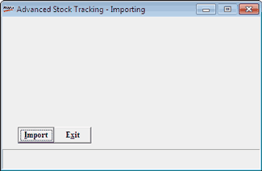

This option is used to get the data from the HO to the POS location if there is a data loss. It can also be used for importing information like sales tax catalogue, system parameters, general lookup, etc., if the HO is in 7.2 version and the POS is in Shoper 9 POS.
How to reach: Housekeeping > Data Import > Replication Import (AST)
The Advanced Stock Tracking – Importing window is displayed.

Note: During Replication Import, the Shoper-ASTIN directory should contain the .AST file received from HO. The name of the file received from Shoper HO 7.2 is like AsccMMDD.AST, where scc = Shoper Company Code, MM = Month and DD = Date. The name of the file received from Shoper 9 HO is like Ascc<<RUNNINGSRLNO>>.AST, where scc = Shoper Company Code, <<RUNNINGSRLNO>> = 6 digits.